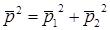

2.4 Энергия звуковой волны. Уровень звука
Энергия
звуковой волны. Интенсивность звука
Распространение
звуковой волны сопровождается переносом энергии, которая зависит от звукового
давления p
и колебательной скорости v
в каждой точке среды.
Средний
поток звуковой энергии, проходящий в единицу времени через единицу поверхности,
нормальной к направлению распространения волны, называется интенсивностью звука или силой звука
(Вт/м2):
Векторная
величина, характеризующая также направление переноса энергии в волне, называется
вектором Умова:
.
Наряду
с интенсивностью звука используют величину плотность звуковой
энергии (Дж/м3),
равную энергии колебаний в единице объема звукового поля.
Можно показать, что в бегущей волне
.
Таким
образом: .
Передача
энергии звуковой волны в область, ранее не затронутую волнами, требует
непрерывного расходования энергии со стороны источника, возбуждающего звук. В
тех зонах, где волна уже возникла, энергия непрерывно передается дальше со
скоростью звука. Возникающие в среде переменные давления непрерывно совершают
работу, ввиду чего и возникает волновое сопротивление (импеданс) при колебательных движениях частиц
среды.
Формулы
для силы звука:
подобны формулам закона Джоуля–Ленца для мощности электрического тока, только мощность, затрачиваемая при действии сил давления, расходуется не на выделение тепла, а на передачу энергии новым частям среды. Поэтому величину часто называют также сопротивлением излучения среды.
Логарифмическая
шкала силы звука. Децибелы
Отношение
максимальной и минимальной интенсивности слышимого человеческим ухом звука очень
велико и составляет 1014 раз (для звукового давления 107
раз). Поэтому для характеристики силы звука удобнее пользоваться
логарифмическими величинами:
уровнем интенсивности звука, выраженным в децибелах (дБ):

и
уровнем звукового давления
(дБ):
,
где
I0
и p0
– значения, соответствующие порогу слышимости на частоте 1000 Гц (,
p0
= 2∙10-5 Па).
Значение
p0 выбрано таким образом, чтобы при нормальных атмосферных
условиях LI
= Lp.
Поэтому в дальнейшем будем использовать величину L
=
LI
= Lp,
которую называют уровнем звука в
децибелах.
Уровень
звука, соответствующий порогу слышимости на частоте 1000 Гц, равен 0 дБ.
Болевой порог восприятия звука соответствует Iб
=
102 Вт/м2 и рб = 2∙102 Па, что
дает значение Lб
= 140 дБ.
Введению
логарифмических единиц измерения способствовало также то обстоятельство, что ухо
человека реагирует не на абсолютное изменение интенсивности звука, а на
относительное. Разница уровней в 1 дБ соответствует минимальной величине,
различимой слухом, при этом интенсивность звука изменяется в 1,26 раза или на
26%. Если же разница уровней составляет 3 дБ, то сила звука изменяется уже в 2
раза.
Рассмотрим,
как рассчитать суммарный уровень звука для звукового поля, создаваемого
несколькими источниками. Возьмем для простоты два
источника.
В любой точке пространства звуковое давление равно:
где
р1 и р2 – мгновенные значения звуковых
давлений, создаваемых в этой точке соответственно первым и вторым
источником.
Результирующая
интенсивность звука равна:
Если
источники звука некогерентные, то есть создаваемые ими давления не связаны по
фазе, то средний квадрат звукового давления  и, следовательно, - интенсивность суммарного звукового поля
равна сумме интенсивностей источников.
Таким образом, если поле создается N некогерентными источниками, то
I
=
I1+I2+…+IN
, а дБ,
где , … - уровни звука, создаваемые каждым
источником
в расчетной точке.
При N одинаковых источниках шума, равноудаленных от расчетной точки, с уровнями звукового давления L0, суммарный уровень равен:
L = L0+10lgN.